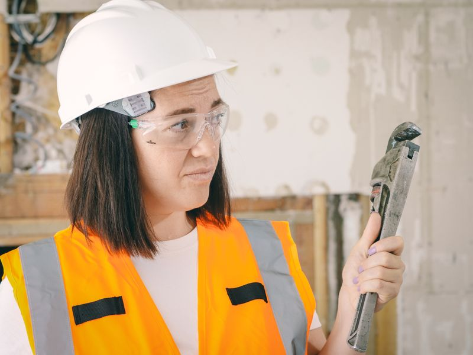
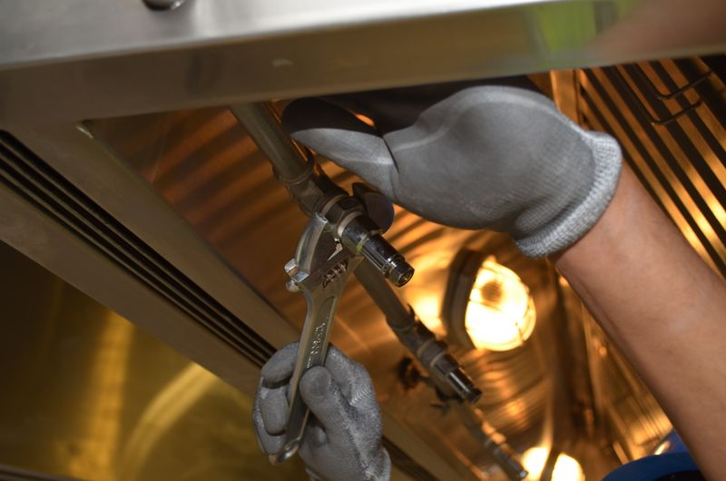
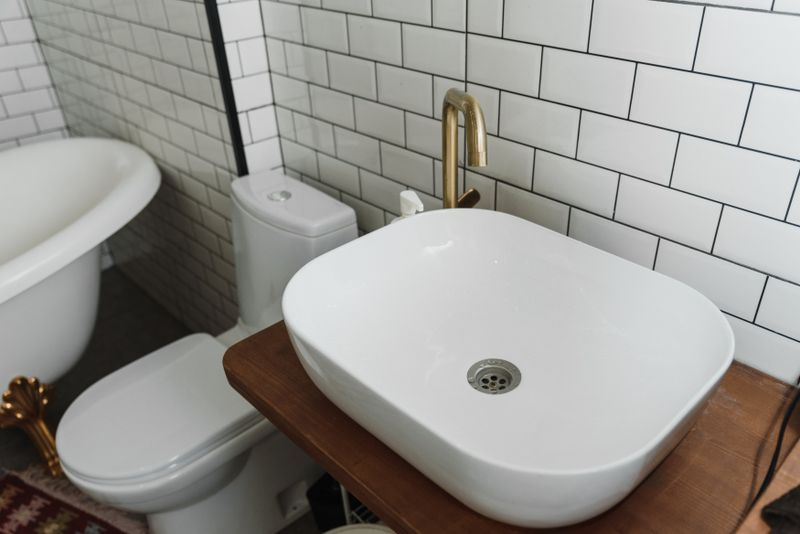
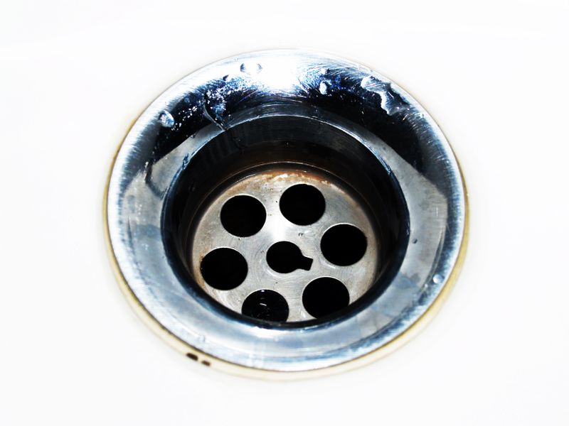
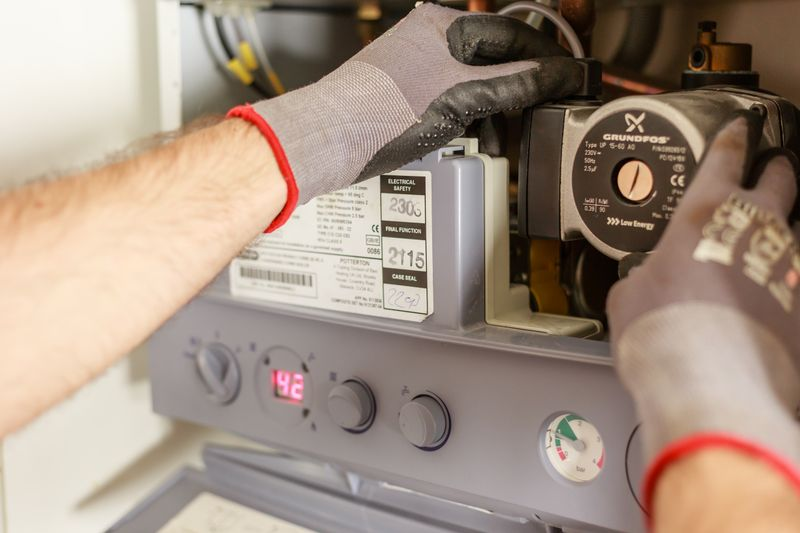
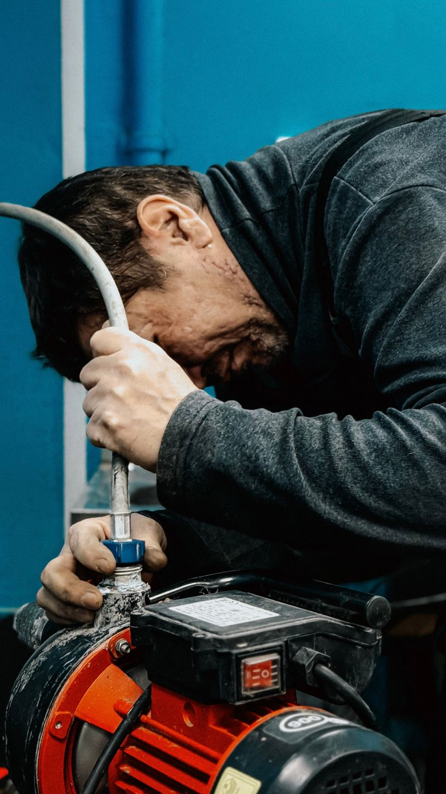
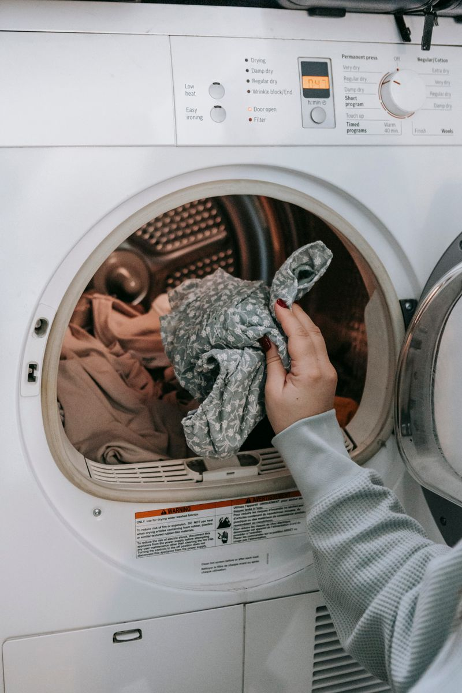
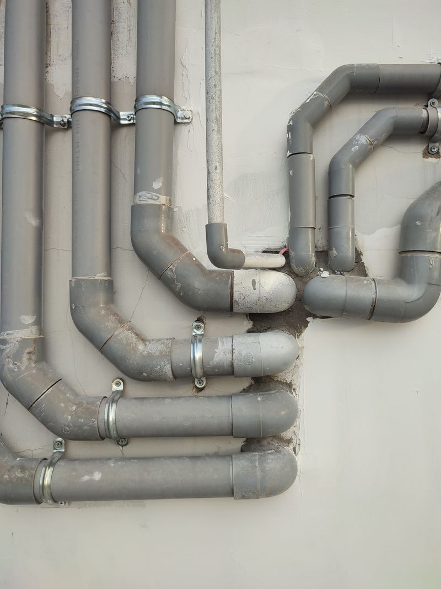
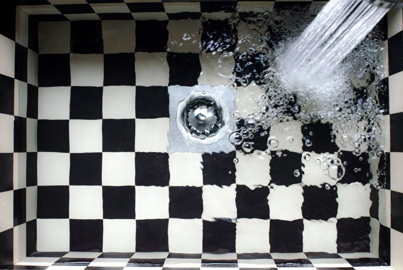
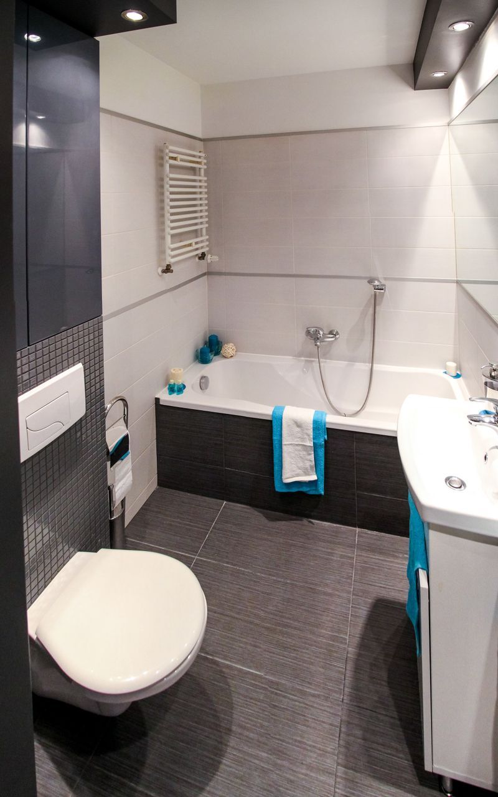

Reparación de fugas
Localizamos y eliminamos fugas en paredes, techos y tuberías antes de que dañen tu propiedad.
Plomeros certificados y puntuales en todo Santo Domingo. Trabajo limpio, precios justos y garantía escrita en cada servicio.
Del grifo que gotea a una instalación completa: un solo equipo para cuidar el agua de tu casa o negocio.

Localizamos y eliminamos fugas en paredes, techos y tuberías antes de que dañen tu propiedad.

Obra gris y renovaciones completas con materiales de calidad y acabado profesional.

Instalamos inodoros, lavamanos, duchas y grifería de última generación.

Desagües, inodoros y registros tapados: los dejamos fluyendo con equipo especializado.

Instalación, reparación y mantenimiento de calentadores eléctricos y a gas.

Bombas y sistemas de presión: diagnóstico, reparación e instalación sin rodeos.

Conectamos tu lavadora o secadora con todas las medidas de seguridad.
Sabemos que un plomero confiable es difícil de encontrar. Por eso hacemos las cosas bien desde la primera visita.
Si algo no queda perfecto, volvemos sin costo. Así de simple. Además, todas nuestras intervenciones están respaldadas por seguro.
Una muestra de instalaciones y reparaciones que dejamos funcionando como nuevas.



“Llamé a las 2:00 de la mañana por una fuga en el baño. En menos de una hora ya estaban en mi casa y dejaron todo impecable. Los recomiendo con los ojos cerrados.”
“Se me tapó la cañería principal un domingo por la tarde. El técnico llegó puntual, me dio el precio antes de empezar y resolvió todo en una hora. Muy profesionales.”
“Instalaron el calentador de agua y una lavadora nueva. Trabajo limpio, rápido y con garantía. Desde entonces solo los llamo a ellos para cualquier cosa de plomería.”
No esperes a que la fuga arruine más tu piso. Escríbenos y un plomero te atiende hoy.
Hablar ahora por WhatsAppAtendemos emergencias en toda el Gran Santo Domingo, todos los días del año.
Av. Winston Churchill, Plaza La Castellana, Local 12
Ensanche Piantini, Santo Domingo, RD
Lunes a domingo, 24 horas
Cotizar por WhatsApp